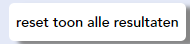

Inleiding
inhoud
inhoud
Voor de typografie heb ik gekeken naar de styleguide, OBA.nl onze eigen projecten en de projecten die vorig jaar voor de OBA zijn gemaakt.
OBA gebruikt voor digitale projecten de font-family 'Avenir'. Er wordt onderscheid gemaakt tussen 'AvenirMedium', 'AvenirBlack' en 'AvenirRoman'.
Er worden vier basis kleuren gebruikt
inhoud
Inhoud
inhoud
inhoud
De oba heeft vaak een witte button met een zwarte tekst erin
Ook hebben ze vaak een link erin dat je naar een andere pagina gaat


Ze willen geen rood of oranje omdat de gebruiker dan kan denken dat er een probleem is


De oba heeft geen tabel erin zitten en deze tabel zou volgens de kleuren van de oba zijn